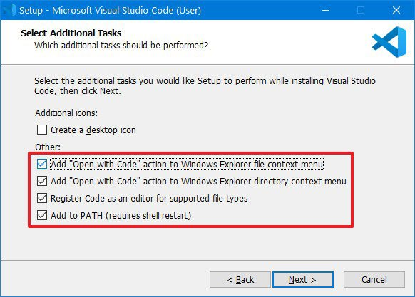

Hướng dẫn cài đặt Visual Studio Code
Giới thiệu Visual Studio Code
Visual Studio Code là trình chỉnh sửa code nhẹ, tiện lợi và phổ biến mà bạn có thể tải xuống và cài đặt miễn phí trên Windows 10, nhưng nó cũng có sẵn trên Linux và macOS.
Ngoài ra, ứng dụng có hỗ trợ Node.js, JavaScript, TypeScript và có thể được mở rộng sang nhiều ngôn ngữ khác, bao gồm PHP, Python, Go, Java, C# và C++. Ngoài ra, bạn cũng có thể cài đặt các tiện ích mở rộng cho runtime, chẳng hạn như Unity và .NET.
Cách cài đặt Visual Studio Code trên Windows 10
Để tải xuống và cài đặt Visual Studio Code, hãy làm theo các bước sau:
- Tải file cài đặt Visual Studio Code cho Windows tại đây
- Lưu file trên thiết bị.
- Nhấp đúp vào file để khởi chạy cài đặt Visual Studio Code trên Windows 10
- Xác nhận các điều khoản thỏa thuận
- Nhấp vào nút Next
- Sử dụng vị trí cài đặt mặc định và nhấp vào nút Next
- Sử dụng cài đặt menu Start mặc định và nhấp vào nút Next
- (Tùy chọn) Tích vào tùy chọn Add "Open with code" action to Windows Explorer file context menu
-
(Tùy chọn) Tích vào tùy chọn Add "Open with code" action to Windows Explorer directory context menu

- Tích vào tùy chọn Register Code as an editor for supported file types
- Kiểm tra tùy chọn Add to PATH
- Nhấp vào nút Install
- Nhấp vào nút Finish
Sau khi hoàn thành các bước, bạn có thể bắt đầu sử dụng VSCode trên máy tính Windows 10